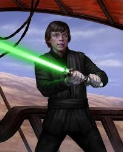

Энакин Скайуокер (англ. Anakin Skywalker, сокращённо Эни) — легендарный чувствительный к Силе человек, мужчина, который служил Галактической Республике как рыцарь-джедай, позже служивший Галактической Империи и командовавший её войсками, как Лорд ситхов Дарт Вейдер. Рождённый Шми Скайуокер, в юности стал тайным мужем сенатора с Набу, Падме Амидалы Наберри. Он был отцом гранд-мастера Люка Скайуокера, рыцаря-джедая Леи Органы-Соло и дедом Бена Скайуокера. Далёкими потомками Энакина Скайуокера были Нат, Кол и Кейд Скайуокеры.
 Скайуокер сражался в Войнах клонов плечом к плечу со своим учителем и в 22 ДБЯ стал рыцарем-джедаем, после чего взял в обучение падавана Асоку Тано. На протяжении всего конфликта Энакин прославился своими подвигами, его стали называть «Героем без страха». Скайуокер и Кеноби, хотя больше не были учителем и учеником, продолжали сражаться вместе, получив признание и став грозной парой для Сепаратистов. Несмотря на всё это, Энакин нёс в себе тяжёлое чувство потери, неуравновешенность и гнев. Это стало очевидным после того, как в битве при Корусанте он обезглавил безоружного графа Дуку. Затем он узнал, что Падме ждёт ребёнка, и к нему стали являться видения о смерти жены от родов (такие же, как перед смертью его матери). Неспособность контролировать свои эмоции привела Энакина к ужасной смуте: он стал подозревать джедаев, копил всё больше гнева, и вскоре пал на тёмную сторону, посчитав это единственным способом спасти Падме от смерти. Он поклялся в верности своему новому учителю Дарту Сидиусу, ранее известному как Верховный канцлер Палпатин, и стал Дартом Вейдером. Была основана Галактическая Империя, во главе которой встал Палпатин в качестве Императора, после чего Вейдер возглавил атаку на Храм джедаев. Другие джедаи были уничтожены по приказу 66. Менее ста джедаев осталось в живых[источник?], в том числе двое магистров: Гранд-мастер Йода и старый учитель Энакина, Оби-Ван Кеноби. Вскоре Вейдеру пришлось сразиться с ним на огненной планете Мустафар.
Хотя, будучи взрослым, Энакин стал ключевой фигурой в Галактике, не смотря на низкое происхождение. Первые годы своей жизни он провёл на Татуине вместе со своей матерью в качестве раба. В 32 ДБЯ Скайуокер встретился с мастером-джедаем Квай-Гон Джинном и Падме Амидалой, королевой Набу на которой будучи взрослым женился. Вскоре после этого Энакин победил на гонках Бунта Ив Классик, тем самым завоевав свободу у проспорившего хозяина Уотто, и, с трудом и сожалением расставшись с матерью, улетел с Татуина вместе с рыцарем Квай-Гоном. На Набу, несмотря на свой юный возраст, он отважился принять участие в битве против Торговой федерации, что, как ни странно, увенчалось успехом: Энакин уничтожил центр контроля дроидов. Вскоре после этого он вступил в Орден джедаев, став падаваном Оби-Вана Кеноби. Джедаи верили, что Энакин был Избранным, который, согласно пророчеству джедаев, должен был восстановить баланс Силы, уничтожив ситхов. Однако совет сначала не хотел его обучать, так как магистр Йода почувствовал в нём опасность, но рыцарь Оби-ван убедил магистров взять Энакина, несмотря на непригодный для начала обучения возраст и его страх за мать, который мог привести на тёмную сторону[6].
Люк Скайуокер (англ. Luke Skywalker) — чувствительный к Силе человек, мужчина, мастер-джедай, сыгравший ключевую роль в поражении Галактической Империи и свержении ситхов во время Галактической гражданской войны. Он был сыном падшего рыцаря-джедая Энакина Скайуокера и сенатора Падме Амидалы, приходился внуком Шми Скайуокер Ларс, племянником Оуэну и Беру Ларс и братом-близнецом Леи Органы. Рождённые 19 ДБЯ на астероиде Полис-Масса, близнецы практически сразу стали сиротами, так как их мать умерла при родах, а отец, павший на тёмную сторону Силы и принявший имя Лорда ситхов Дарт Вейдер, так и не узнал о их рождении. Люка и Лею разделили и мальчика забрал мастер-джедай Оби-Ван Кеноби, который отвёз его на планету Татуин, где передал младенца на воспитание семье Ларсов, чтобы спрятать его от Галактической Империи. На Татуине Люк рос не зная о своём происхождении, но его жизнь полностью изменилась, после того как дядя приобрёл двух дроидов, R2-D2 и C-3PO, перевозящих чертежи супероружия Империи — «Звезды Смерти». После того как его родных убили солдаты Империи, разыскивавшие чертежи, Скайуокер, потерявший всё что у него было, вместе с Кеноби отправился в опасное путешествие, чтобы доставить чертежи Альянсу повстанцев, в пути обучаясь путям Силы у старого джедая и встретившись с Ханом Соло и, ещё не зная об этом, своей сестрой, принцессой Леей Органой, членом Восстания. После того как Кеноби был убит Вейдером, Скайуокер принял участие в битве при Явине вместе с повстанцами и, направляемый духом Кеноби, смог уничтожить «Звезду Смерти». Став членом Альянса повстанцев, Люк участвовал во множестве сражений с силами Империи, возглавляемых Вейдером, который охотился за Скайуокером на протяжении последующих трёх лет. После того как повстанцам пришлось покинуть свою базу во время битвы на планете Хот, Скайуокер отправился на покрытую болотами планету Дагоба, где, следуя указаниям своего погибшего наставника Кеноби, он приступил к джедайским тренировкам под руководством мастера-джедая Йоды. Однако позже Скайуокер угодил в расставленную Вейдером ловушку в Облачном городе на Беспине, где состоялась дуэль на световых мечах между ним и лордом ситхов, в ходе которой Вейдер раскрыл Люку, что являлся его отцом. Спустя год Скайуокер принял участие в битве при Эндоре, во время которой сумел убедить отца вернуться к свету, после чего Энакин пожертвовал собой чтобы убить Императора, Дарта Сидиуса, и уничтожить ситхов. Став рыцарем-джедаем, Скайуокер предпринял попытку обучить Лею, о родстве с которой узнал от Йоды и Кеноби, путям джедаев, но та предпочла сфокусироваться на формировании Новой Республики, после поражения Империи. Сам же Люк решил отойти от публичной жизни и вместе с Лор Сан Теккой отправился в путешествие по всей галактике, на поиски древних знаний и реликвий Ордена джедаев. В это же время он принялся обучать новое поколение джедаев, в том числе и своего племянника, сына Леи и Хана, Бена Соло. Однако Скайуокер чувствовал великую тьму в Бене и, в момент краткого забытья, увидев как глубоко тёмная сторона Силы проникла в него, он вознамерился убить юношу во сне, но отбросил это наваждение. Тем не менее, проснувшийся в этот момент Бен, увидев учителя с занесённым над ним активированным световым мечом, напал на Люка и, полностью отдавшись Тёмной стороне, уничтожил Храм джедаев Скайуокера, а с ним и новое поколение джедаев.